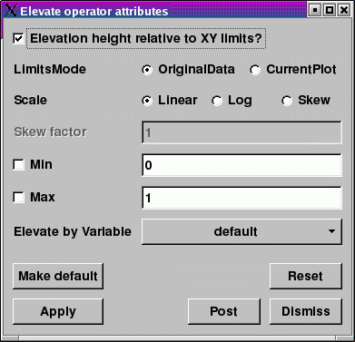

|  |
| Figure 29 |
Since the Elevate operator uses a scalar variable to elevate all of the points in the mesh, the Elevate operator has a number of controls related to scaling scalar data. For example, the Elevate operator allows you to artificially set minimum and maximum values for the scalar variable so you can eliminate data that might otherwise cause your elevated plot to be stretched undesirably in the Z direction. To set minimum and maximum values for the Elevate operator, click on the Min or Max check boxes in the Elevate operator attributes window (see figure) and type new values into the adjacent text fields. The options for scaling the plots created using the Elevate operator are the same as those for scaling Surface plots. For more information on scaling, see the Surface plot documentation.
The most useful feature of the Elevate operator is its ability to elevate plots using an arbitrary scalar variable. By default, the Elevate operator uses the plotted variable in order to elevate the plot's mesh. This only works when the plotted variable is a scalar variable. When you apply the Elevate operator to plots that do not accept scalar variables, the Elevate operator will fail unless you choose a specific scalar variable using the Elevate by Variable variable menu in the Elevate operator attributes window.